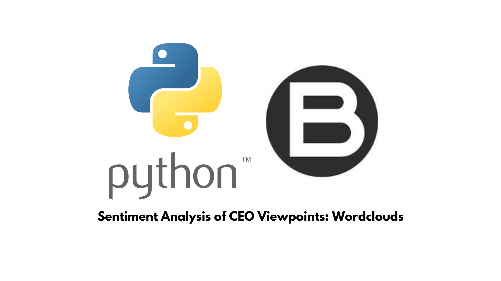
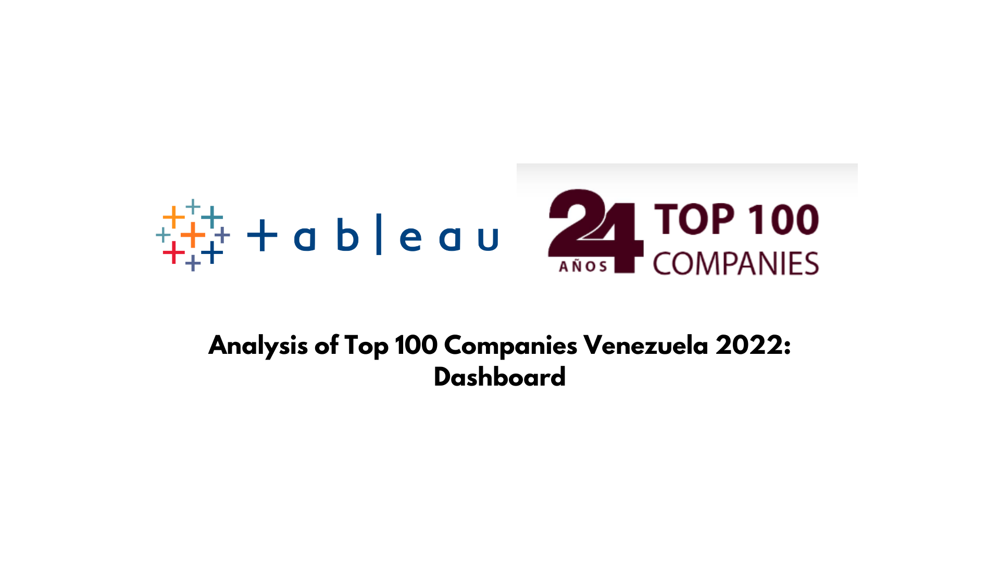

Hi, I'm
Economist with M.Sc. in Data Science and 7+ years applying rigorous quantitative methods to socioeconomic challenges — from field survey design and econometric modeling to automated ETL pipelines and interactive BI dashboards.
Years Experience
Featured Projects
Articles Published
I bridge the gap between economic theory and modern data science — transforming complex socioeconomic data into clear, actionable insights. With a background in Economics and a Master's in Data Science, I specialize in quantitative research methodologies, econometric modeling, and survey design applied to development, labor markets, and business contexts.
Currently, I work as a Quantitative Consultant at Strattos.io, designing automated ETL pipelines and predictive models for development projects across Latin America. I also teach Strategic Economics at Universidad Israel, bridging academic rigor with practical data analysis.
Outside of work I read — mostly about how humans make decisions and why the world is more uncertain than we think. I also teach, lift weights, and play indie games.
A curated selection of quantitative & data science work
End-to-end data pipeline for socioeconomic survey collection, automated ETL cleaning, econometric modeling, and interactive BI visualization — built with Python, BigQuery, and Power BI.
Applied unsupervised machine learning to group countries by COVID-19 outcomes — revealing geopolitical and socioeconomic patterns in pandemic response.

NLP-driven analysis of 5+ years of corporate communications using VADER lexicon to quantify sentiment trends.

Econometric corporate ranking across 6 consecutive editions (2017–2022), published in Business Venezuela Magazine.
Strattos.io — Quito, Ecuador
Universidad Israel — Quito, Ecuador
Infracommerce Latam — Quito, Ecuador
Cámara Venezolano-Americana de Comercio e Industria (VenAmCham)
Open to research collaborations, consulting projects, and conversations about impactful work in quantitative analysis and applied econometrics.